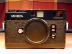

器材库 > 旁轴胶片相机 > CLE

规格总览
发布日期
1980
confidor2013-03-22 22:404.92 分
操作性 5.00功能性 5.00美观性 5.00趣味性 5.00耐用性 4.50性价比 5.00
NINE2006-01-25 00:514.42 分
操作性 5.00功能性 4.00美观性 5.00趣味性 4.50耐用性 4.00性价比 4.00
ssbgzx2005-08-27 19:064.83 分
操作性 5.00功能性 5.00美观性 5.00趣味性 5.00耐用性 4.50性价比 4.50
夜独行2004-09-05 12:203.58 分
操作性 3.50功能性 3.00美观性 4.50趣味性 4.50耐用性 4.00性价比 2.00

产品图 / 样片
cle
评测 / 相关文章
该产品暂无存档的评测文章